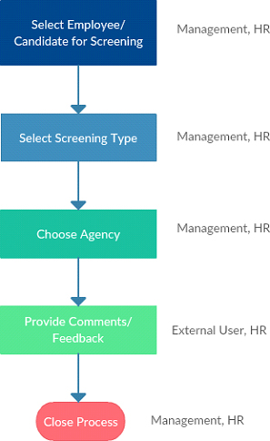
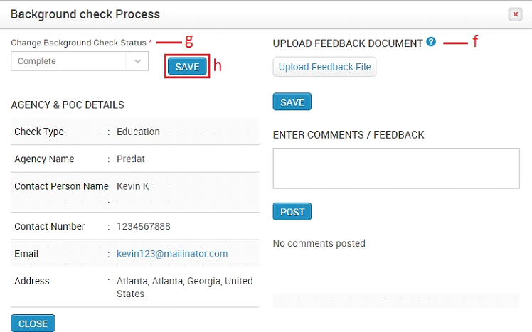

Background Check
Background Check module enables the Pre and Post-Employment screening process. You can configure the screening types and manage the agencies you wish to work with. Below is the Background Check process flowchart.

Description:
- A User (Management, HR) selects an employee or candidate to have a background check performed on him/her.
- The User selects the screening type and an agency for that screening type
- An External User (Agency User) logs into the application and provide details/feedback about the employee/candidate.
- The User views the feedback and provides his/her own comments.
- The User closes the process.
How do I add a Screening Type?
- Click Background Check in the top menu
- Click Configuration on the left menu panel
- Click Screening Types in the submenu
- Click +Add button on the right side
- Enter the required details
- Click SAVE button
How do I add an Agency?
- Click Background Check in the top menu
- Click Configuration on the left menu panel
- Click Edit icon in the action column
- Click Agencies in the submenu
- Click +Add button on the right side
- Enter the required details
- Enter POC (Point of Contact) details
- Enter Contact Type (The roles created for an external user will be populated here. Please refer section 6.2 How do I add Roles & Privileges)
- Click SAVE button.
How do I select an Employee/Candidate for Screening?

- Click Background Check in the top menu
- Click Screening on the left menu panel
- Click Employee/Candidate Screening in the submenu
- Click +Add button on the right side
- Select an Employee/Candidate
- Select a Screening Type
- Choose the agency
- Click SAVE button
How do I set up HR and Management Group Emails?
- Click Site Config on the top menu
- Click General on the left menu panel
- Click Email Contacts in the submenu
- Click +Add button on the right side
- Select the business unit the HR group
- Select ‘Background Check – HR Group’ (HR)/ ‘Background Check’ Management Group (Management)
- Enter group email id
- Click SAVE button
How do I provide Feedback as an External User?
- Click Background Checkstrong in the top menu
- Click Screening on the left side panel
- Click Employee/Candidate Screening in the submenu
- Click Edit icon against an employee/candidate name
- Click on the Edit icon against an employee/candidate name in the Background Check Process Grid
- Upload feedback documents
- Click SAVE button
- Enter comments/feedback
- Click POST button
How do I close a Background Check Process?
- Click Background Check in the top menu
- Click Screening on the left menu panel
- Click Employee/Candidate Screening in the submenu
- Click Edit icon against an employee/candidate name
To close a specific Background process:
- Click on the Edit icon against an employee/candidate name in the Background Check Process Grid

- You can upload feedback documents or enter comments
- Select ‘Complete’ for the Background Check Status
- Click SAVE button
To close all Background processes for an employee:
- Select Complete for the Background Check Status
- Click SAVE button